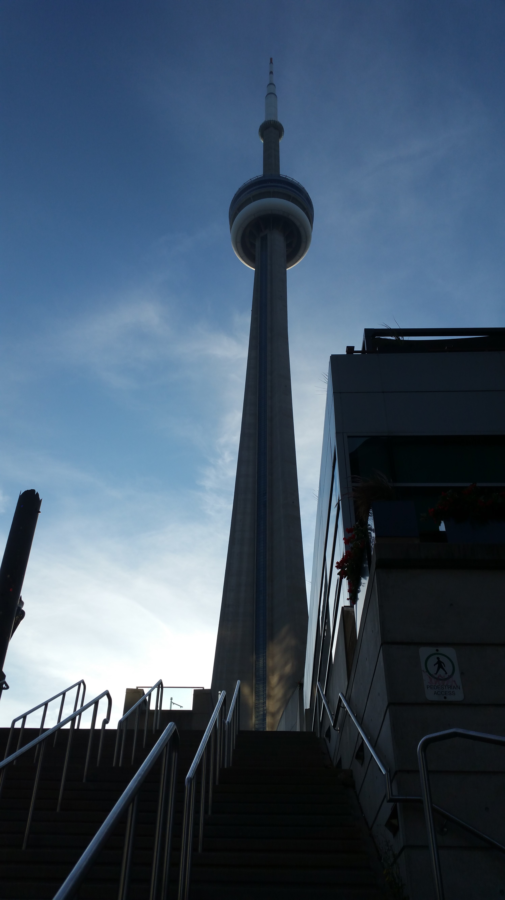
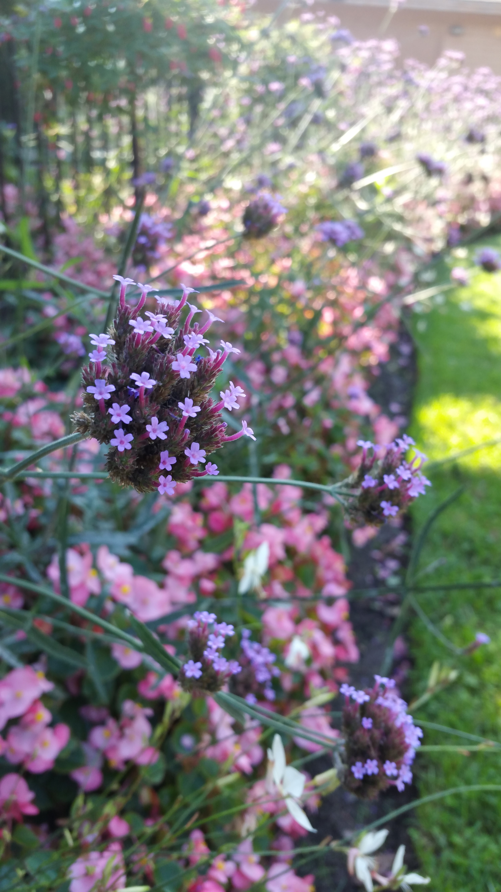
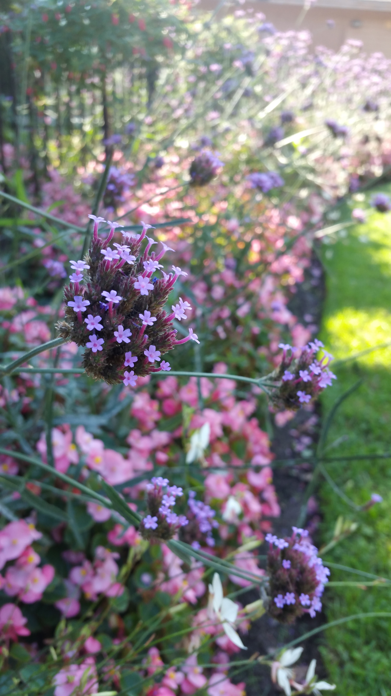
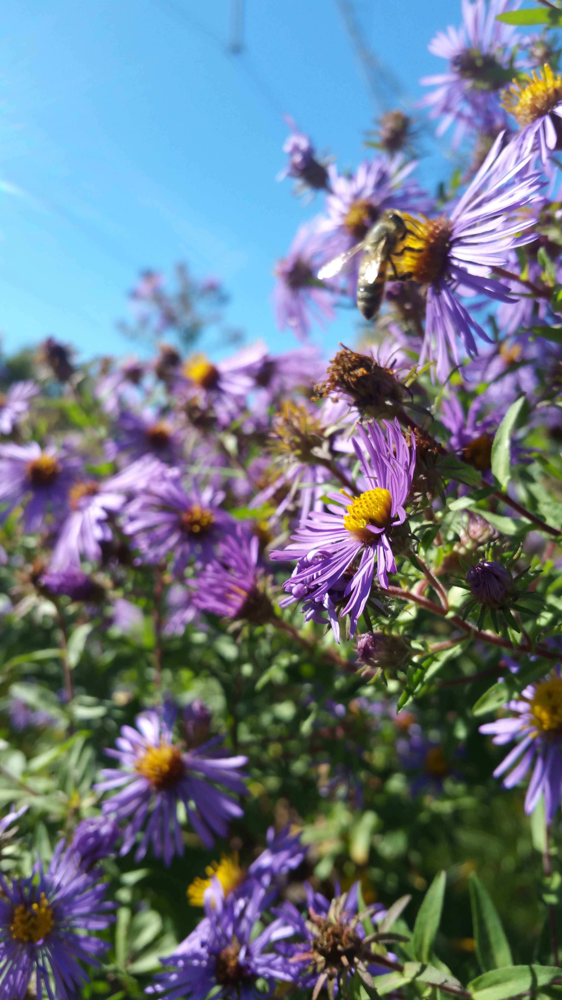
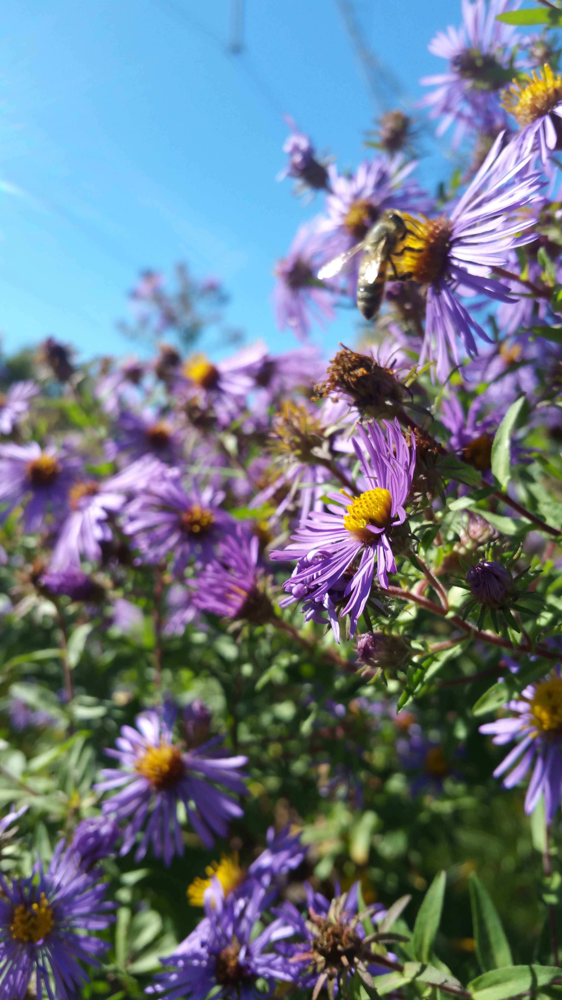

Hello again! Turns out I'm not the best at keeping up with the blog... But hey, at least it's not eating up all my time right? I'm writing this one from Bolton, MA, but (if the title didn't notify you) for this leg of the journey we were in Canada and New York!
So, that Parc de la Gatineau (just north of Ottawa in Gatineau, QC) was no longer unrestricted camping, and we did not have reservations. So we slept in the car and headed there in the morning for a breakfast picnic instead! The area was still very French-speaking, with a surprisingly low amount of English spoken... I mean, English-speaking Ontario was right across the river! But we managed to find our way to a Planet Fitness to shower. I've neglected to mention, but Lacey got PF's "Black Card Membership," which allows access to any and all of their locations (which we use to shower and steal Tootsie Rolls). Pretty helpful when you're on the go, albeit a little pricey.
We gave Ottawa a pretty cursory glance after that--we were more excited for Toronto--but did manage to glimpse the university district on our drive through. Onward we drove across 1000 Islands region of Ontario, where every town claimed it was "the best town in" or "the jewel of" the region. Kind of lost its charm. That evening we ate like locals at an A&W hosting a hotrod show! I stole a root beer glass to take home. We came into Toronto late that evening, and elected to sleep in Taylor Creek Park in North York.
Taylor Creek was noisy as hell all night, with groups of kids coming to smoke or hang out until the wee hours, and vigilant dog-walkers arriving shortafter the next morning. We ate a breakfast picnic there before driving out of the area and heading to a place known as the Beaches. It was a cool place to walk around, but there were kids everywhere for some reason...

Waddup, Lake Ontario?!
It looked like a pretty awesome place to live.


Some graffiti under a bridge. It seemed to be commissioned by the city!
We took the subway downtown again (we could park at the Beaches all day, for free!) and took the long walk from midtown to the waterfront. The city was pretty, and definitely the most metropolitan place we had been to so far on the trip!

But the waterfront took the cake.

Cool garden near Harbourfront Centre

Weird sculpture pond or something. You could walk into this droid-looking cement sphere and it messed with all the acoustics around you.
There was this hilarious place called the Paws-Way, which was like a pet shopping mall! Tons of pet-related things, including a pet-hero memorial, classes, and tons of play areas. Right behind it was the Amsterdam Brewhouse, where we got ourselves some midday drinks right on the lake!

The CN Tower from the restaurant
From there we drunkenly wandered back downtown, in hopes of finding some nightlife to take part in, but realized we should probably eat first... we grabbed a bite at a place just off Spadina Avenue.
Another shot of the CN Tower
We took an Uber back to the car later that evening, and having sobered up, decided we wanted to wake up in Niagara! So we got back on the road for a short trip down Lake Ontario's coast. That night we had a close call with law enforcement... a security guard for the place we slept at banged on our window. Thankfully, he was a pretty chill guy.
In the morning we drove into Niagara! We had breakfast on the Dufferin Islands, upriver on the Canadian side.


Some lovely gardens outside of the Floral Showhouse, upriver
 

BZZZZZ!!!
Finally, we were at Table Rock House and the falls came into full view.

It's an incredible place to be, a breathtaking thing to witness. Over 750 thousand gallons per second flow over these combined falls!! Trying to fathom that much water flowing everafter in such a way is... mindboggling. The mist sprays you up on the top of the gorge even half a mile away, and the wind coming up out of the gorge feels like it's coming off the sea. If you've never been to Niagara Falls, go. It was my second time and it was nonetheless astounding to see firsthand.
There are a ton of international locals on the Canadian side, which is cool and has a very humbling effect. However, Clifton Hill (the Canadian side's "entertainment" district) is pretty nauseating, and the Canadian side's skyline is choking with hotels and casinos.
We took a ride on the Hornblower (the Canadian side's "Maiden of the Mist" boat tour) and came away soaked, before walking all over the town and getting different views of the falls. We eventually made it back to the Dufferin Islands for dinner, but were chased back to our car by the local wildlife (these spiders were huge. So bad.) We crossed the border back into the United States via the Rainbow Bridge, getting one last spectacular view of the Horseshoe Falls before crossing the customs checkpoint and finding a place to sleep (thank you, Walmart).
The next morning we woke up a little far away, in Niagara, NY, and had some brunch at the Veterans' Memorial Park. Then we headed back to the falls to check out Goat Island, on the American side.

The American side does things a little differently. Firstly, Goat Island has no commercial buildings and much of the gorgefront is protected. There are a lot less international tourists (more white, English speakers relatively; less people overall), but it's hard to tell if these things are because 'Murica or simply due to the American view being pretty inferior.

Despite that, it was still spectacular
 

MORE BZZZ!!!
After spending the day walking around Goat Island and Niagara Falls, NY, we decided we wanted to start covering ground towards MA. Our hopeful goal of visiting the Adirondacks was messed up by our lack of time to spend there, so we decided to cross the remainder of NY as quickly as possible. That evening we headed into Buffalo to get wings at the Nine Eleven Pub (the wings were SO HOT but SO TASTY), then struck out on the road with sunset.
Thanks for reading, and stay tuned for more!
Mileage: 3000
Weather: Clear, humid, windy, 70F
Currently listening to: Com Truise